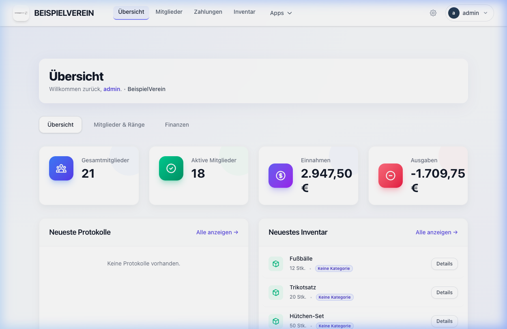
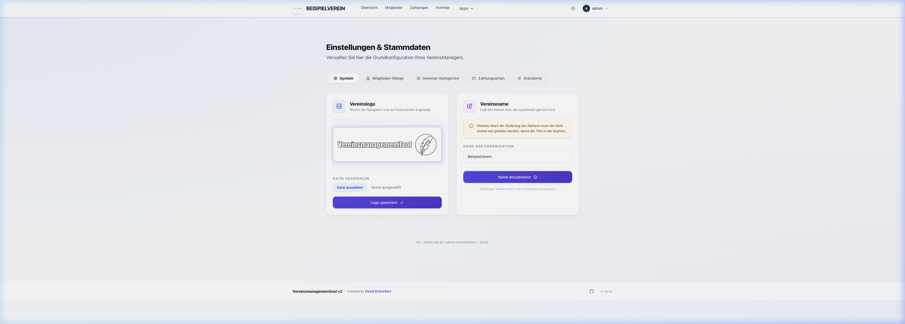
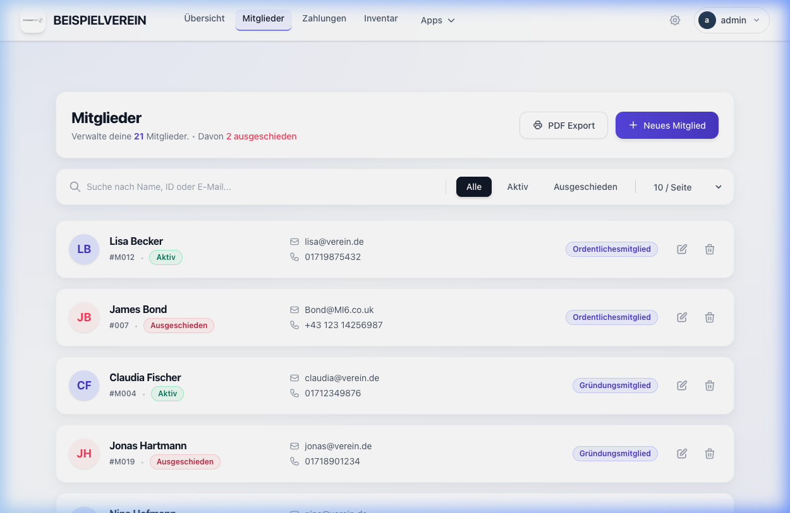

Das VMT ist die moderne Lösung für Vereine jeder Größe. Verwalte deine Mitglieder, Finanzen und dein Inventar an einem sicheren, zentralen Ort – einfach, schnell und digital.

Führen Sie digitale Akten mit individuellen Rängen und verknüpften Dokumenten für jedes Mitglied.
Erfassen Sie alle Einnahmen und Ausgaben revisionssicher und exportieren Sie Berichte direkt als PDF.
Behalten Sie den Überblick über Vereinseigentum mit festen Standorten und Kategorien.
Erstellen und verwalten Sie Sitzungsprotokolle digital und stellen Sie diese als PDF bereit.
Passen Sie das Tool auf Ihre Bedürfnisse an. Erstellen Sie eigene Lagerorte, Mitgliedsarten und Zahlungswege für Ihren spezifischen Vereinalltag.

Nutzen Sie leistungsatarke Filter und eine übersichtliche Tabellenansicht, um Informationen in Sekunden zu finden.
